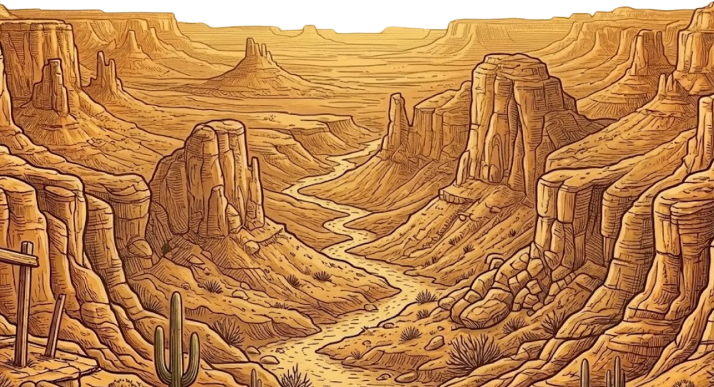
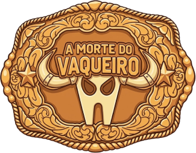
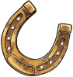

Jogo: A Morte do Vaqueiro

Jogue agoraHistória

O Gonzaga, um cara de cidade grande, recebeu por herança o curral de seu antigo avô, que havia falecido, e soube sobre a herança pelo açougueiro; além disso, ele recebeu um diário que pertencia a seu avô. Chegando ao curral, Gonzaga nota um laço brilhante que, quando tocado, revela uma parte secreta no diário, que esconde a explicação do seu uso, e com o laço, Gonzaga irá aprender a cuidar do curral.